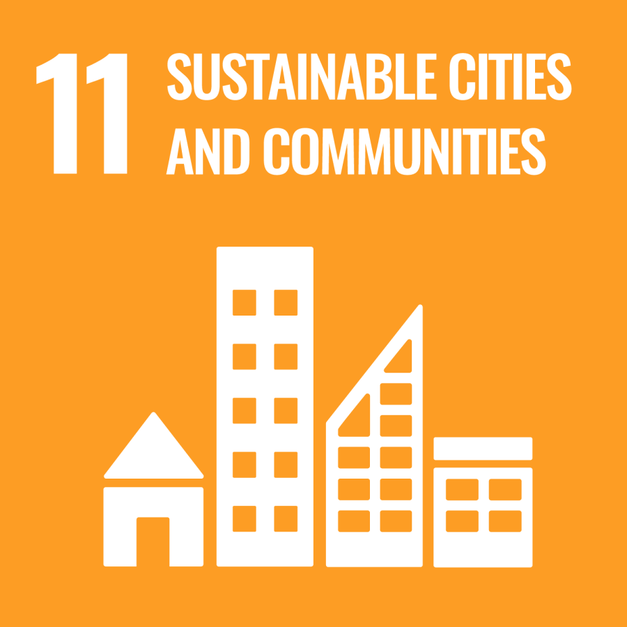

2.1 Name of Proposed System
The name for our proposed system is HopOn. The phrase "Hop-On" means getting onto a public transportation. As a result, it tells the users that the kiosk is related to bus travel and commuting. The name “HopOn” can also refer to how simple it is for users to use public transportation with just a hop. In addition, HopOn is such a friendly and memorable name for users to pronounce, which aligns with our motive that is to encourage users to take public transport on a regular basis and access the travel information in a short time to ensure they confidently board the correct bus. In shorts, we wish that the public will find it easy to remember this simple and meaningful name.
2.2 Description of Proposed System
HopOn is an interactive touchscreen kiosk at bus stops that is specially designed for the passengers. The system will receive information from GPS devices from each bus and the sensors will send the availability of seats on those specific buses. Therefore, passengers can easily access the information simply from the interactive kiosk.
To achieve cognitive theme, HopOn displays all the comprehensive data and information in real time. Passengers at bus stops often encounter multiple external stimuli, such as traffic noise, bad weather conditions and time constraints. Therefore, the system helps in minimizing the mental effort of users by presenting complete real-time data, like seat occupancy and traffic delays, through simplified visual metrics. For instance, HopOn has color-coded capacity indicators, rather than the complicated raw data logs, to indicate the route situation.
In addition, MaCGUIVER, which stands for Magnificence Cognition Guidance and Virtual Intelligence Emotional Recognition is an AI-powered assistant designed to provide more personalised support to passengers. It includes an AI emotion detection feature that analyses facial expressions to identify possible feelings of confusion or stress while users interact with the kiosk. To further support wheelchair users, the physical kiosk area will be designed with wheelchair accessibility in mind, allowing them to access the system more comfortably. However, the system will not assume a user’s actual emotional state based on facial expressions alone. Assistance will remain optional, allowing users to accept or decline it, while facial data will be handled with appropriate privacy protection.
Apart from that, HopOn introduced an AI voice assistant to assist users at bus stops. The conversational AI-voice interface fosters a welcoming and humanized environment. This makes the users feel comfortable and easy to communicate with. For senior citizens, disabled users, or even individuals who are uncomfortable using digital touchscreens, natural voice interaction plays a crucial role in reducing technological intimidation and promoting a sense of dignity in public infrastructure.
Lastly, HopOn is an easy approach to implement since it is memorable and simple for our passengers to execute. HopOn help the passengers to get information easily through a finger and assist them through different AI features, like AI voice assistance and virtual intelligence emotional recognition. Through these features, HopOn aims to create a more accessible and supportive bus stop experience by helping passengers understand information, receive assistance and make travel decisions more independently.
2.5 SDG / UTM Sustainability Connection
HopOn supports the United Nations Sustainable Development Goals (SDGs), especially SDG 11: Sustainable Cities and Communities. By using AI and digital technology in public transportation, HopOn aims to make travelling easier, safer, and more accessible for everyone. It also encourages people to use public buses and supports the development of more sustainable cities.

SDG 11 Sustainable Cities and Communities
HopOn supports SDG 11, especially Target 11.2, which focuses on making public transportation safe, affordable, accessible and suitable for everyone. Features such as GPS bus tracking, seat availability and AI arrival predictions help passengers get the information they need to plan their journeys.
MaCGUIVER also helps make public transportation easier for everyone. Its AI Emotion Face Analyser can detect signs of confusion or stress and offer help through pop-up messages. For blind and visually impaired passengers, the AI Voice Assistant can read important bus information aloud. The kiosk is also designed to be wheelchair-friendly, making it easier for passengers with mobility difficulties to use it. By improving bus services and making them easier to use, more people may choose to travel by bus, helping to create more sustainable communities.
UTM’s commitment to Sustainability (ESG)
E
Environmental
HopOn supports UTM's smart campus and sustainability goals by using technology to improve bus services.
S
Social
-
MaCGUIVER can also help new students, international students, and visitors who are unfamiliar with the campus bus routes.
-
The AI Voice Assistant provides spoken information for visually impaired passengers, while the wheelchair-friendly kiosk makes it easier for people with mobility difficulties to use the system.
-
These features help make campus transportation more convenient and accessible for everyone.
G
Governance
- If installed at campus bus stops, students, staff, and visitors can easily check bus routes, track bus locations, see available seats, and plan their journeys.
- Overall, HopOn shows how AI, Human-Computer Interaction (HCI), and accessible design can improve public transportation.
- By providing useful information and assistance, the system aims to create a smarter and more inclusive bus service for the UTM community and the public.